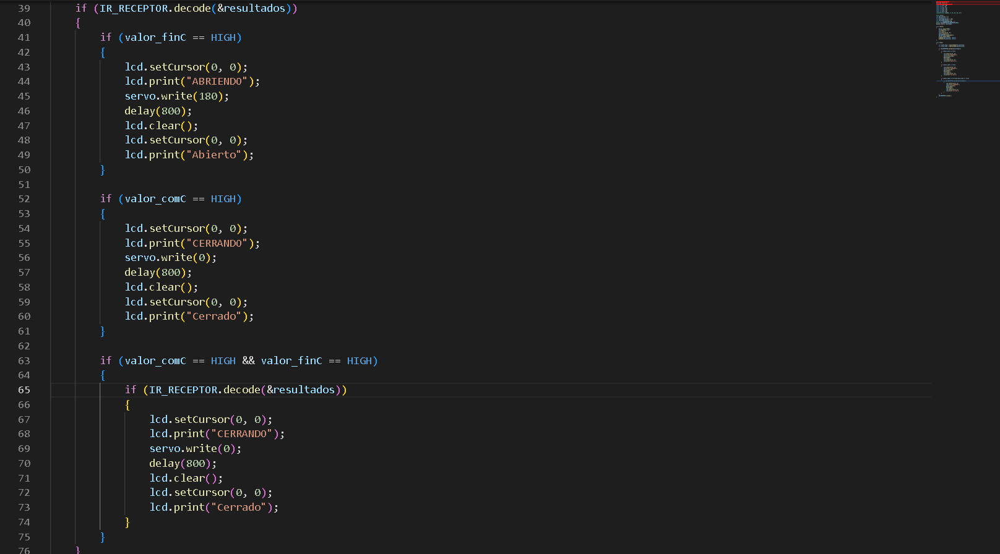
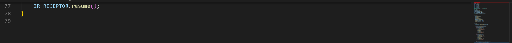

Arduino
No puedo colocar todas las lineas de codigo en orden asi que las coloco por imagen:



| Indice |
| Desafio |
| TinkerKad |
| Arduino |
| Codigo porton automatico |
El desafio consiste en crear un programa automatizado de un porton, para ello necesitamos: |
| 1- Arduino |
| 2-servomoto |
| 3- sensor IR |
| 4- control remoto por IR |
| 5- fines de carrera (en el tinkerkad no existen, asi que tuve que simularlos por 2 llaves o interrutpor deslizantes) |
| 6- resistencias 1kΩ. Para el código del funcionamiento del porton tuve que usar 2 librerías: #include Servo.H y #include IRremote.h y una tercera libreria para colocar una pantalla lcd #include LiquidCrystal.h |
(Aclaracion: las librerias van encerradas por <>) |
Descipcion del Codigo
El codigo del programa funciona son 3 condiciones: |
| 1- Si el fin de carrera del comienzo de carrera esta activo, y se presiona un botón del control, el porton se abre. |
| 2- Si el fin de carrera del final esta activo, significa elfin de carrera del comienzo esta inactivo, osea abierto, y si se presiona un botón, el porton se cierra. |
| 3- Si ninguno de los dos fines de carreras están activos, significa que el porton esta en el medio del camino, y si se presiona un botón, el porton se cierra. Para ello uso dos variables que me lean en que posición se encuentran los interruptores deslizantes para podes preguntar cada caso |
Arduino

